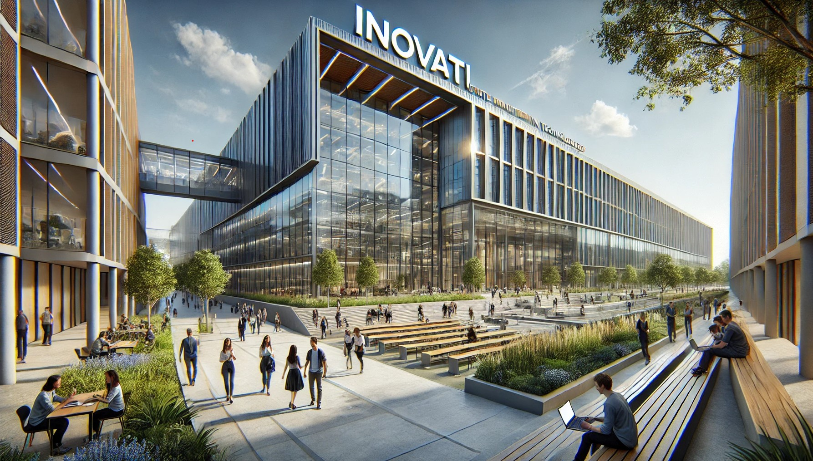

Bem-vindo à InovaTI
A InovaTI é uma instituição de ensino superior dedicada a formar profissionais de excelência no campo da Tecnologia da Informação. Fundada com o objetivo de promover a inovação e o desenvolvimento de soluções tecnológicas, a InovaTI oferece uma abordagem prática e orientada para o futuro, capacitando seus alunos a enfrentar os desafios de um mercado em constante evolução.
Missão
A missão da InovaTI é moldar o futuro da tecnologia, capacitando a próxima geração de líderes e inovadores por meio de uma educação avançada e inclusiva. Nossa abordagem educacional é fundamentada em três pilares principais:
- Educação de Qualidade:
- Inovação e Criatividade:
- Responsabilidade Social e Sustentabilidade:
Oferecemos uma formação sólida e prática, que conecta o conhecimento teórico à sua aplicação no mercado. Nossos cursos são constantemente atualizados para acompanhar as rápidas mudanças no campo da tecnologia da informação, garantindo que nossos alunos adquiram habilidades atuais e relevantes. Isso inclui o domínio de ferramentas tecnológicas emergentes, linguagens de programação e técnicas de desenvolvimento, além de uma base forte em ciências de dados, inteligência artificial e segurança digital.
Incentivamos uma cultura de inovação, onde os estudantes são desafiados a pensar de forma criativa e resolver problemas complexos por meio da tecnologia. Oferecemos acesso a laboratórios de ponta, ambientes de coworking e programas de incubação de startups, criando oportunidades para que os alunos desenvolvam soluções tecnológicas que possam impactar positivamente a sociedade. Além disso, os projetos acadêmicos são voltados para casos reais, permitindo que os alunos experimentem o ambiente do mercado de trabalho desde o início de sua jornada educacional.
Acreditamos que a tecnologia deve servir como uma força para o bem, promovendo o desenvolvimento sustentável e inclusivo. Nossa missão é preparar profissionais que entendam a importância de criar soluções tecnológicas que respeitem o meio ambiente e promovam a equidade social. Desde a implementação de práticas sustentáveis no campus até a inclusão de disciplinas que abordam a ética no uso da tecnologia, a InovaTI forma profissionais conscientes e responsáveis.
Em última instância, nossa missão é transformar nossos alunos em agentes de mudança, equipando-os com as habilidades e a visão necessárias para liderar a revolução digital global. A InovaTI aspira ser um espaço onde a criatividade, a inovação e o conhecimento técnico se encontram para resolver os desafios do presente e moldar o futuro.
Visão
A InovaTI se posiciona como uma instituição visionária, comprometida em ser referência mundial no desenvolvimento de talentos e soluções tecnológicas que moldem o futuro da sociedade digital. Nossa visão vai além de formar profissionais: queremos ser um catalisador de transformação tecnológica e social, conectando o saber acadêmico às demandas reais da indústria e à evolução das tecnologias emergentes.
Valores
- Inovação: Buscamos constantemente novas maneiras de resolver problemas e melhorar o que já existe.
- Excelência: Comprometidos em oferecer ensino de alta qualidade e promover o desenvolvimento contínuo de nossos alunos.
- Sustentabilidade: Priorizamos o uso responsável da tecnologia em prol de um futuro sustentável.
- Inclusão: Acreditamos que a tecnologia deve ser acessível a todos, independentemente de origem ou circunstâncias.
História
A InovaTI - Instituto de Inovação em Tecnologia foi fundada com o objetivo de oferecer uma educação alinhada às rápidas mudanças da era digital. Criada por especialistas em tecnologia e educação, a instituição surgiu para formar profissionais preparados para o futuro, antecipando tendências tecnológicas. Com um campus moderno e laboratórios avançados, a InovaTI rapidamente se tornou um centro de inovação, atraindo estudantes e parcerias com grandes empresas do setor. Desde o início, a InovaTI se destacou por oferecer cursos em áreas emergentes como Inteligência Artificial e Big Data. Com o tempo, expandiu sua atuação global, formando líderes que moldarão o futuro da tecnologia.
Cursos Oferecidos
- Ciências da Computação
- Engenharia de Software
- Sistemas de Informação
- Segurança da Informação
- Inteligência Artificial
- Análise de Dados e Big Data
- Desenvolvimento Web e Mobile
- Análise e Desenvolvimento de Sistemas
- Redes de Computadores
- Gestão de TI
Diferenciais
- Laboratórios Avançados: Equipados com as mais recentes tecnologias para que os alunos possam desenvolver habilidades práticas.
- Parcerias com Empresas de Tecnologia: Conexão direta com o mercado através de estágios e programas de mentoria.
- Projetos Inovadores: Incentivo à criação de soluções reais para desafios do mundo moderno, por meio de hackathons, workshops e competições.
Localização
Estamos localizados no Setor de Grandes Áreas Norte 609 - Asa Norte, Brasília - DF, 70830-404, com fácil acesso e infraestrutura moderna, oferecendo aos estudantes um ambiente inspirador para aprender e inovar.